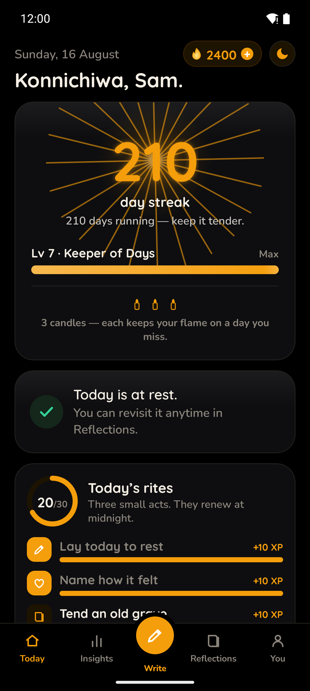
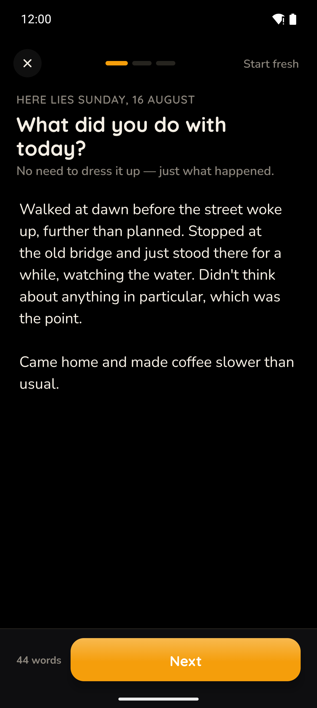
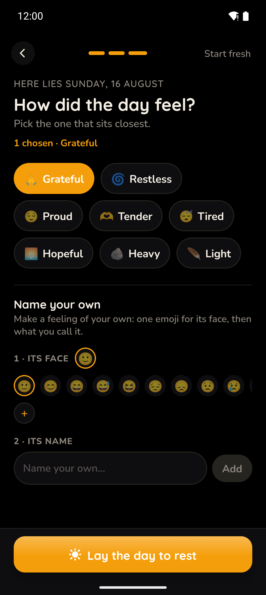
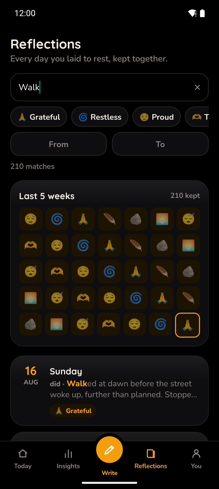
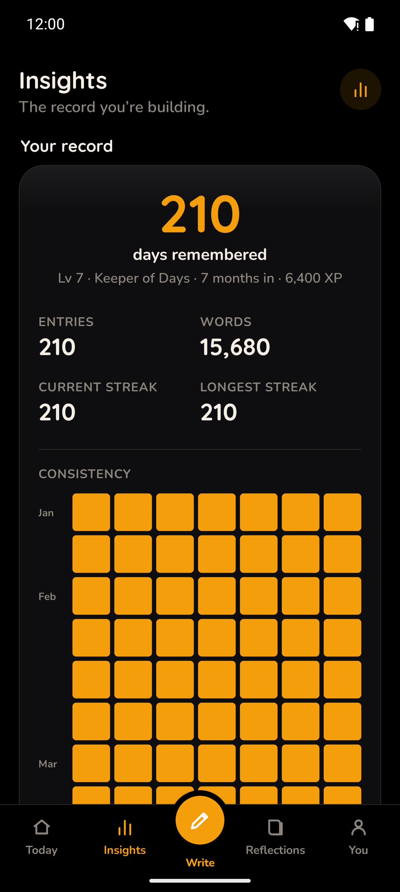
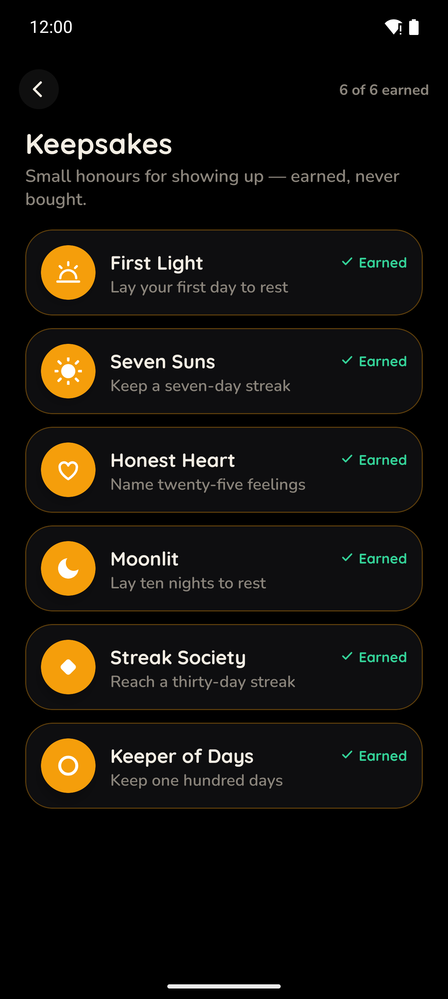
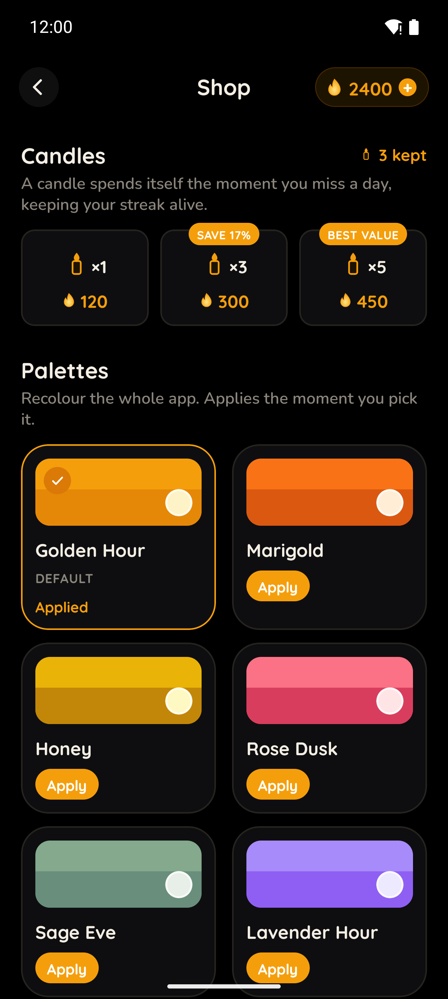

The app as it actually is today, night mode. Real captures, not mockups.
c.border hairline and the card sheen do all of it.npm run shots (Maestro + adb) against the
storeShots dev scenario — a 210-day streak, "Sam", 2,400 embers — with the status bar in demo
mode (12:00, full battery). The fixture is deliberately a heavy account: designs must survive big numbers.
01-today — Today — the home screen: streak hero, rites, level
02-write — Write — step 1 of the entry flow
03-moods — Write — the mood step (multi-select)
04-reflections — Reflections — search, filters, the last-5-weeks heat
05-insights — Insights — the record, consistency grid (cut off mid-grid: that is the defect, not the capture)
06-achievements — Achievements / Keepsakes
07-shop — Shop — palettes, skies, embers